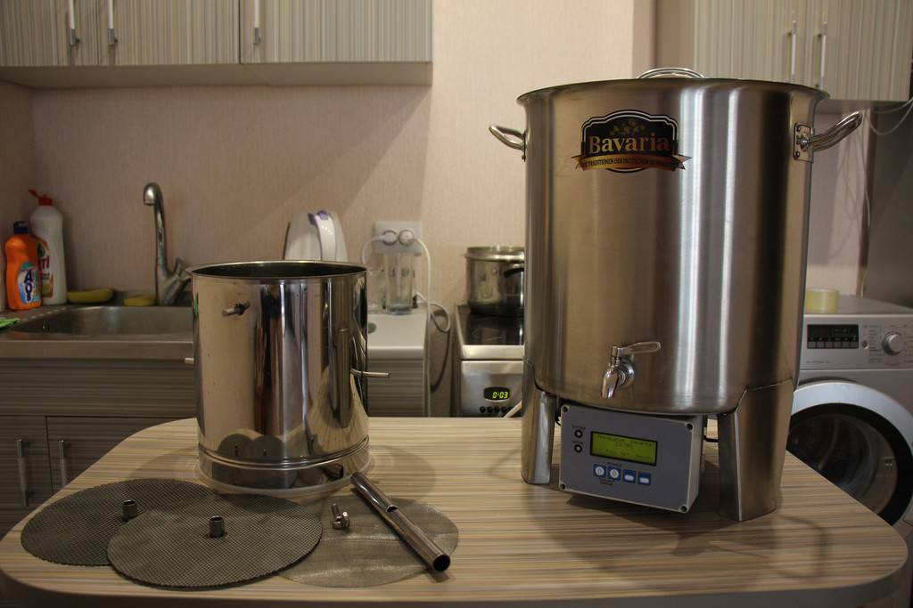

Домашняя пивоварня — новое популярное приспособление, которое помогает ценителям напитка получать его быстро и почти бесплатно. В состав входит устройство для приготовления пива с бочонком. Его объем составляет 8-10 л. Бочонок оснащен клапаном для спуска избыточного давления. В некоторых моделях предусмотрена функция карбонизации, датчик давления, термометр.
Чтобы приготовить пиво, домашние пивовары используют солодовые экстракты разных сортов и производителей. Так получаются оригинальные и традиционные напитки.
Готовится пиво с домашней установкой путем естественного брожения за две недели. Процесс несложный, потому как «работа» производится дрожжамами. Как итог — живое пиво, непастеризованное — редкость и эксклюзив для ценителей и знатоков. Оно приготовлено из натуральных ингредиентов, что говорит о сохранении полезных качеств.
Вкус пива домашней варки отличается от покупных сортов. Некоторые любители отказываются от бутылочного пива потому, что самому готовить напиток оказывается интересным занятием. Да и вкус, полученный по собственному рецепту, приходится по душе многим.
Приготовление пива на домашней пивоварне — площадка для любознательных авторов, которые не боятся экспериментов. Так, например, меняя сырье, некоторые получают результат, который до этого не появлялся ни у одного массового производителя. Эксклюзивные сорта и стили пива рождаются в домашних пивоварнях.
Преимущества установки для приготовления пенного напитка заключаются в ее цене, простоте эксплуатации и предельно низкой себестоимости готового пива. Наличие в свободной продаже солодовых экстрактов и хмеля позволяет создавать новые виды домашнего напитка, отличающегося цветом, вкусовыми качествами, ароматикой. Почувствовать себя профессионалом с чешской или немецкой семейной пивоварни сможет каждый.